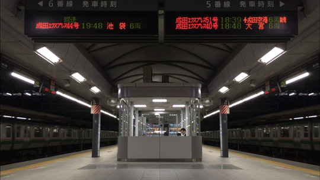
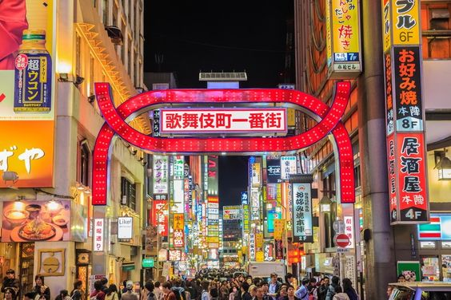
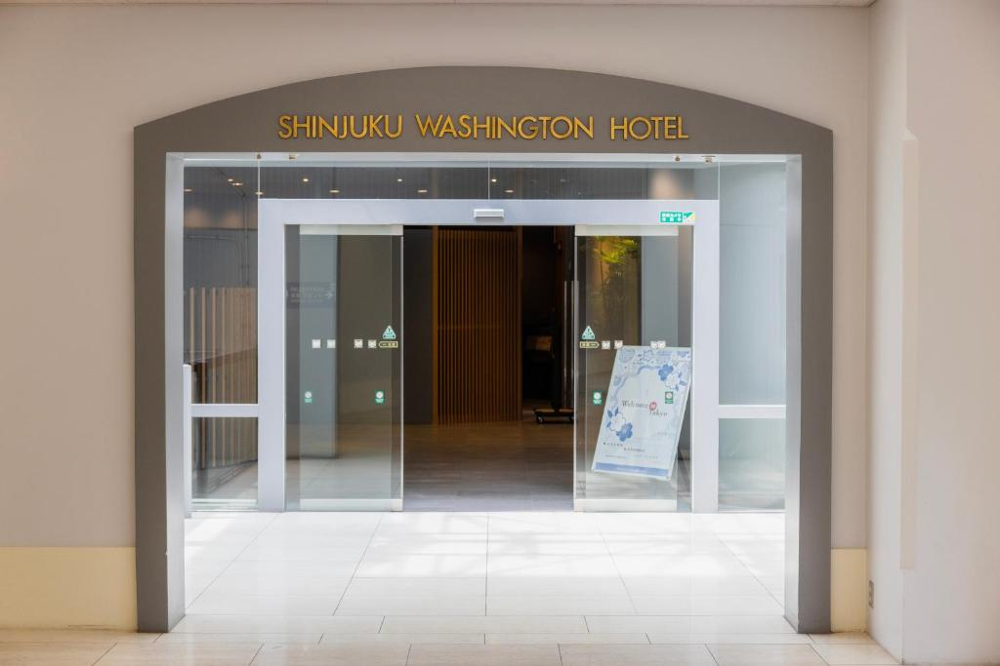

Tokyo
Underground
1.
Shinjuku Station

악명 높은 신주쿠역?
신주쿠역은 16개의 노선이 지나다니며, 하루 평균 300만명이 이용하는 부도심이다. 도쿄의 교통중심지로서, 숙박하기 최적인 위치이고 또 쇼핑을 할 수 있는 상점가들과 유흥을 즐길 수 있는 곳들이 많다. 그러나 그만큼 신주쿠는 무척 복잡하고 길을 잃기로 악명 높은 곳이다. 가령 구글 맵을 이용하더라도 지하이고, 현 위치가 정확히 파악되지 않아서 헷갈리기 쉽상이다.
그렇지만 겁먹지 말고 쉽게 정리하면 시간 낭비 하지 않고 나갈 수 있다. 신주쿠의 출구는 동쪽, 서쪽, 남쪽으로 분류할 수 있다. 지하철에서 내리는 곳을 기준으로 2층으로 올라갈 것인지 지하 1층으로 내려갈 것인지 정하면 된다. 2층이 남쪽, 지하 1층은 동쪽과 서쪽 출구이다.
~新宿~



